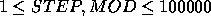

| Uniform Generator |
Computer simulations often require random numbers. One way to generate pseudo-random numbers is via a function of the form

where ``  " is the modulus operator.
" is the modulus operator.
Such a function will generate pseudo-random numbers (seed) between 0 and MOD-1. One problem with functions of this form is that they will always generate the same pattern over and over. In order to minimize this effect, selecting the STEP and MOD values carefully can result in a uniform distribution of all values between (and including) 0 and MOD-1.
For example, if STEP = 3 and MOD = 5, the function will generate the series of pseudo-random numbers 0, 3, 1, 4, 2 in a repeating cycle. In this example, all of the numbers between and including 0 and MOD-1 will be generated every MOD iterations of the function. Note that by the nature of the function to generate the same seed(x+1) every time seed(x) occurs means that if a function will generate all the numbers between 0 and MOD-1, it will generate pseudo-random numbers uniformly with every MOD iterations.
If STEP = 15 and MOD = 20, the function generates the series 0, 15, 10, 5 (or any other repeating series if the initial seed is other than 0). This is a poor selection of STEP and MOD because no initial seed will generate all of the numbers from 0 and MOD-1.
Your program will determine if choices of STEP and MOD will generate a uniform distribution of pseudo-random numbers.
Each line of input will contain a pair of integers for STEP and MOD in that order (  ).
For each line of input, your program should print the STEP value right- justified in columns 1 through 10, the MOD value right-justified in columns 11 through 20 and either ``Good Choice" or ``Bad Choice" left-justified starting in column 25. The ``Good Choice" message should be printed when the selection of STEP and MOD will generate all the numbers between and including 0 and MOD-1 when MOD numbers are generated. Otherwise, your program should print the message ``Bad Choice". After each output test set, your program should print exactly one blank line.
3 5 15 20 63923 99999
3 5 Good Choice
15 20 Bad Choice
63923 99999 Good Choice